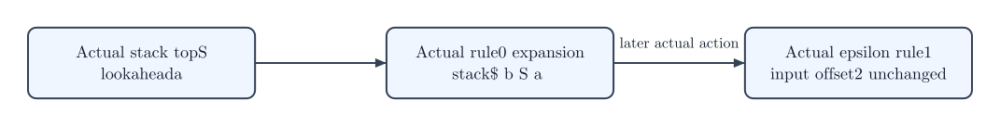
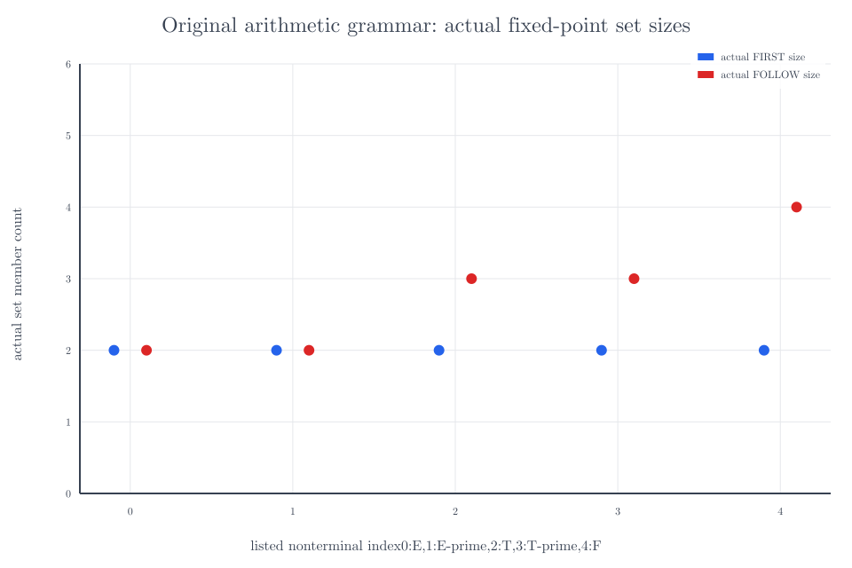
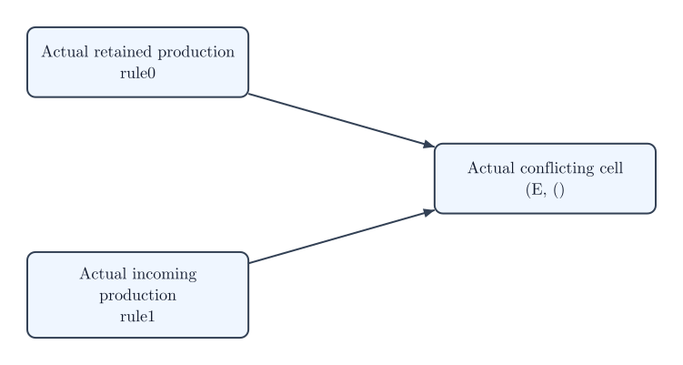
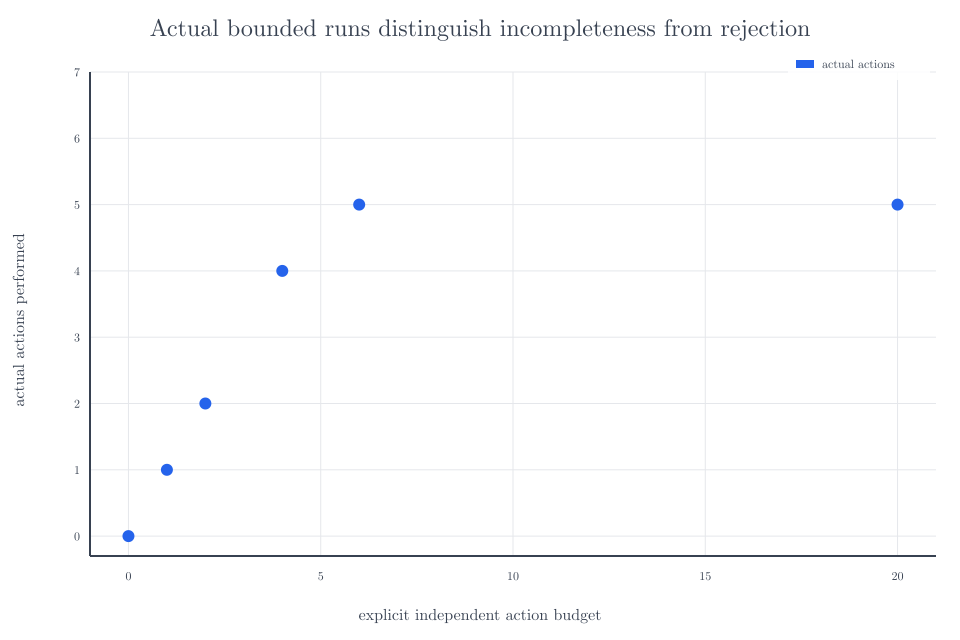

LL(1) predictive parsing
Abstract
Predictive parsing expands a nonterminal using one lookahead token and an indexed production table. We inspect actual native fixed-point sets, table conflicts and stack actions, retain the original arithmetic grammar and recognition controls, and separate syntax rejection from action-budget exhaustion. Conflicted tables are diagnostic objects; parsing refuses them rather than silently choosing a rule that can loop on left recursion.
FIRST, FOLLOW and one lookahead
FIRST(alpha) contains terminals that can begin a derivation of alpha, plus epsilon when it can vanish. FOLLOW(A) contains terminals that can follow nonterminal A, with the native end marker in FOLLOW(start). For each indexed production A→alpha, table(A,a) receives its rule ID for each terminal in FIRST(alpha), and also each FOLLOW(A) member when alpha is nullable. A cell encountering another rule ID records an actual conflict; the earliest rule remains stored for inspection. Duplicate indexed productions can also conflict even if deduplicating the mathematical grammar would remove that redundant choice.
FIRST and FOLLOW are finite monotone set fixed points, not guesses from test expressions. The native constructor counts their actual passes and successful member insertions. No report-side grammar analysis rebuilds those sets or predictive decisions. Epsilon is an empty rhs vector, not a literal empty-string token; the dollar end marker is reserved for the parser.
Tiny actual expansion and epsilon use
Use S→a*S*b | epsilon, which recognizes an*bn. On a,a,b,b, the first expansion pushes the reversed rhs so the first a is at the stack top. Later, lookahead b chooses the epsilon rule without consuming a token. The complete native trace exposes every actual before/after stack and chosen rule. Stack vectors are shown bottom-to-top.
#include <dm/dm.hpp>
int main() {
std::filesystem::create_directories("build");
const dm::algorithms::LL1Parser p({{{"S", {"a", "S", "b"}}, {"S", {}}}, "S"});
auto t = p.trace({"a", "a", "b", "b"});
std::print("| actual action index | actual input offset | actual top | actual lookahead | actual " "action0:expand,1:match,2:accept,3:reject | actual production or minus1 | actual stack " "after, bottom to top |\n| ---: | ---: | --- | --- | ---: | ---: | --- |\n");
for (auto &e : t.events) {
std::string stack;
for (auto &s : e.after)
stack += s + " ";
std::print("| {} | {} | {} | {} | {} | {} | {} |\n", e.step,
e.input_offset, e.top, e.lookahead, int(e.action),
e.production, stack);
}
auto first = t.events.front();
std::string stack;
for (auto &s : first.after)
stack += s + " ";
auto epsilon =
std::find_if(t.events.begin(), t.events.end(), [](const auto &e) {
return e.production == 1;
});
dm::graphics::Diagram d;
d.node("initial", {0, 0},
std::format("Actual stack top{}\nlookahead{}", first.top,
first.lookahead)).node("expanded", {6, 0},
std::format(
"Actual rule{} expansion\nstack{}",
first.production, stack)).node(
"epsilon", {12, 0},
std::format("Actual epsilon rule{}\ninput offset{} unchanged",
epsilon->production, epsilon->input_offset)).edge("initial",
"expanded").edge("expanded", "epsilon", "later actual action");
d.save_svg("build/ll1_stack.svg");
}| actual action index | actual input offset | actual top | actual lookahead | actual action0:expand,1:match,2:accept,3:reject | actual production or minus1 | actual stack after, bottom to top |
|---|---|---|---|---|---|---|
| 0 | 0 | S | a | 0 | 0 | $ b S a |
| 1 | 0 | a | a | 1 | -1 | $ b S |
| 2 | 1 | S | a | 0 | 0 | $ b b S a |
| 3 | 1 | a | a | 1 | -1 | $ b b S |
| 4 | 2 | S | b | 0 | 1 | $ b b |
| 5 | 2 | b | b | 1 | -1 | $ b |
| 6 | 3 | b | b | 1 | -1 | $ |
| 7 | 4 | $ | $ | 2 | -1 | $ |

Original arithmetic grammar and expression controls
Retain E→T E-prime, E-prime→+ T E-prime | epsilon, T→F T-prime, T-prime→* F T-prime | epsilon, F→( E ) | id, in the original production order. Native construction reaches conflict-free FIRST/FOLLOW sets and the original accept/reject outcomes for five token sequences. Actual set sizes are plotted with a small horizontal offset solely to keep two equal counts visible; every member is printed from the native sets. These counts are construction results, not measured parsing speed or language-size estimates.
#include <dm/dm.hpp>
int main() {
std::filesystem::create_directories("build");
const dm::algorithms::LL1Parser p(dm::algorithms::ll1_expression_grammar());
std::print("Actual original grammar conflict-free: {}.\n\n| original nonterminal | actual FIRST " "members, eps for empty marker | actual FOLLOW members |\n| --- | --- | --- |\n",
p.is_ll1());
std::vector<double> x1, x2, first, follow;
std::vector<std::string> nts{"E", "E'", "T", "T'", "F"};
for (std::size_t i = 0; i < nts.size(); ++i) {
std::string a, b;
for (auto &s : p.first(nts[i]))
a += (s.empty() ? "eps" : s) + " ";
for (auto &s : p.follow(nts[i]))
b += s + " ";
std::print("| {} | {} | {} |\n", nts[i], a, b);
x1.push_back(i - .1);
x2.push_back(i + .1);
first.push_back(p.first(nts[i]).size());
follow.push_back(p.follow(nts[i]).size());
}
std::print("\n| original token sequence | actual accepted | actual actions | actual tokens consumed " "|\n| --- | --- | ---: | ---: |\n");
for (auto tokens : std::vector<std::vector<std::string>>{
{"id", "+", "id", "*", "id"}, {"(", "id", "+", "id", ")", "*", "id"},
{"id"}, {"id", "+"}, {"id", "id"}
}) {
std::string text;
for (auto &s : tokens)
text += s + " ";
auto a = p.analyze(tokens);
std::print("| {} | {} | {} | {} |\n", text, a.accepted, a.steps,
a.consumed);
}
auto &w = p.construction_work();
std::print("\nActual FIRST passes {}; FOLLOW passes {}; FIRST insertions {}; FOLLOW insertions {}; " "table attempts {}; conflicts {}.\n",
w.first_passes, w.follow_passes, w.first_insertions,
w.follow_insertions, w.table_attempts, w.conflicts);
auto plot = dm::graphics::RPlot::create();
plot.points(x1, first, "actual FIRST size", {37, 99, 235}, 6).points(
x2, follow, "actual FOLLOW size", {220, 38, 38}, 6).y_limits(0, 6).title("Original arithmetic grammar: actual fixed-point set sizes").x_label("listed nonterminal index0:E,1:E-prime,2:T,3:T-prime,4:F").y_label("actual set member count").save_svg("build/ll1_original.svg");
}Actual original grammar conflict-free: true.
| original nonterminal | actual FIRST members, eps for empty marker | actual FOLLOW members |
|---|---|---|
| E | ( id | $ ) |
| E' | eps + | $ ) |
| T | ( id | $ ) + |
| T' | eps * | $ ) + |
| F | ( id | $ ) * + |
| original token sequence | actual accepted | actual actions | actual tokens consumed |
|---|---|---|---|
| id + id * id | true | 17 | 5 |
| ( id + id ) * id | true | 24 | 7 |
| id | true | 7 | 1 |
| id + | false | 8 | 2 |
| id id | false | 5 | 1 |
Actual FIRST passes 4; FOLLOW passes 3; FIRST insertions 15; FOLLOW insertions 14; table attempts 13; conflicts 0.

Actual conflicts refuse arbitrary parsing
Retain the original left-recursive control E→E+T | T, T→T*F | F, F→(E) | id. Its real construction attempts put distinct rule IDs into the same lookahead cells. The earliest rule remains visible, but using it as an arbitrary recognizer can repeatedly expand E without consuming input. The corrected API therefore permits conflict inspection while rejecting a parse request with a logic error. This refusal is not a statement that the expression itself lies outside the context-free language.
The next table prints every actual conflicting cell and both original rule identities. The diagram uses its first native witness. No fallback rule choice or successful parse is invented for the conflicted model.
#include <dm/dm.hpp>
int main() {
std::filesystem::create_directories("build");
const dm::algorithms::LL1Parser p(dm::algorithms::ll1_expression_grammar(
true));
std::print("| actual conflict nonterminal | actual lookahead | actual earliest retained rule | actual " "conflicting incoming rule |\n| --- | --- | ---: | ---: |\n");
for (auto &c : p.conflicts())
std::print("| {} | {} | {} | {} |\n", c.nonterminal, c.lookahead,
c.retained, c.incoming);
bool refused = false;
try {
p.recognize({"id"});
} catch (const std::logic_error &) {
refused = true;
}
std::print("\nActual grammar conflict-free {}; actual parse request refused {}.\n",
p.is_ll1(), refused);
auto c = p.conflicts().front();
dm::graphics::Diagram d;
d.node("retained", {0, 2},
std::format("Actual retained production\nrule{}", c.retained)).node(
"incoming", {0, -2},
std::format("Actual incoming production\nrule{}", c.incoming)).node(
"cell", {7, 0},
std::format("Actual conflicting cell\n({}, {})", c.nonterminal,
c.lookahead)).edge("retained", "cell").edge("incoming",
"cell");
d.save_svg("build/ll1_conflict.svg");
}| actual conflict nonterminal | actual lookahead | actual earliest retained rule | actual conflicting incoming rule |
|---|---|---|---|
| E | ( | 0 | 1 |
| E | id | 0 | 1 |
| T | ( | 2 | 3 |
| T | id | 2 | 3 |
Actual grammar conflict-free false; actual parse request refused true.

Incomplete budgets and complete-input guards
An explicit action budget prevents an unbounded parser loop from being mistaken for a completed computation. StepLimit is a separate status; a false accepted flag in that status is not a language rejection. The following independent budget controls all use the same a,b input under S→a*S*b | epsilon. They are separate bounded executions, not prefix reruns used to fabricate the earlier trace. The default recognize method throws if its100000-action budget is exhausted rather than silently returning false.
Literal empty and dollar tokens are rejected before parsing. This closes the old early-end-marker acceptance hazard, where a caller-supplied dollar could hide a remaining tail. Unknown ordinary tokens instead lead to actual no-entry or mismatch syntax rejection. There is no lexer, error recovery or backtracking.
#include <dm/dm.hpp>
int main() {
std::filesystem::create_directories("build");
const dm::algorithms::LL1Parser p({{{"S", {"a", "S", "b"}}, {"S", {}}}, "S"});
std::vector<double> x, y;
std::print("| explicit action budget | actual performed actions | actual accepted | actual " "status0:accept,1:no-entry,2:mismatch,3:extra,4:budget | actual consumed tokens |\n| ---: | " "---: | --- | ---: | ---: |\n");
for (std::size_t budget : {0, 1, 2, 4, 6, 20}) {
auto a = p.analyze({"a", "b"}, budget);
std::print("| {} | {} | {} | {} | {} |\n", budget, a.steps, a.accepted,
int(a.status), a.consumed);
x.push_back(budget);
y.push_back(a.steps);
}
bool reserved = false;
try {
p.recognize({"a", "$", "b"});
} catch (const std::invalid_argument &) {
reserved = true;
}
auto unknown = p.analyze({"z"});
std::print("\nActual reserved end-marker token rejected {}; actual ordinary unknown-token status {}; " "accepted {}.\n",
reserved, int(unknown.status), unknown.accepted);
auto plot = dm::graphics::RPlot::create();
plot.points(x, y, "actual actions", {37, 99, 235}, 6).y_limits(-.3, 7).title("Actual bounded runs distinguish incompleteness from rejection").x_label("explicit independent action budget").y_label("actual actions performed").save_svg("build/ll1_budget.svg");
}| explicit action budget | actual performed actions | actual accepted | actual status0:accept,1:no-entry,2:mismatch,3:extra,4:budget | actual consumed tokens |
|---|---|---|---|---|
| 0 | 0 | false | 4 | 0 |
| 1 | 1 | false | 4 | 0 |
| 2 | 2 | false | 4 | 1 |
| 4 | 4 | false | 4 | 2 |
| 6 | 5 | true | 0 | 2 |
| 20 | 5 | true | 0 | 2 |
Actual reserved end-marker token rejected true; actual ordinary unknown-token status 1; accepted false.

Contracts and verification
Grammar start must be a defined nonterminal, every literal lhs/rhs symbol is nonempty and differs from the reserved dollar marker, and rule IDs fit int. Empty rhs represents epsilon. FIRST/FOLLOW terminate through finite monotone insertions; table construction records actual conflicts and retains earliest indexed rules for inspection. Parsing refuses conflicted models. The owned grammar, final sets, table and witnesses are available as const model-lifetime references.
Parsing performs actual stack actions and table/member lookups, with grammar-dependent preprocessing and lookup/push costs. For fixed suitable grammar, productive parsing has the usual linear token-length interpretation, but no universal O(tokens) claim covers arbitrary grammar sizes, nullable expansion counts, map/string comparisons or explicit budget exhaustion. Construction and action counters name their selected real operations rather than elapsed time.
Trace counts original token symbols, two actual initial stack symbols, each real event record and its actual before/after stack symbols. Initial and per-event known geometry is admitted before copies. Default cap is one million logical records;0 disables only the optional capture cap. String characters, scalar fields/capacities/runtime/result copies and bytes/RAM are excluded. Action-budget status remains explicit, captures own their data and no replay reconstructs decisions.
Native tests compare 2047 short binary words with the independently defined an
bn language, verify real parser actions and FIRST/FOLLOW sets, and cover
conflicting tables, reserved tokens, explicit budgets, quotas and ownership. The
ten-report batch passed 101 native CTest cases, 34 directly instrumented
ASan/UBSan cases, 103 compiled/executed public examples, 515/515 scoped file
definitions plus 10 exact LCG class definitions, and ten representative clangd
hovers. Independent Python integer/Fraction, explicit-label graph search,
quadratic sequence DP and full weighted-stump references passed 69430 records
across all ten topics, including a separately fitted held-out Iris model. Frozen
ordinary compatibility passed 1000 Lex-BFS orders, 1000 library sorts, 100 LBG
codebooks, 100 complete five-round LogitBoost ensembles and 200 LLL bases;
corrected LBG final labels/objectives are intentionally excluded from historical
compatibility. All 4 complete programs executed and all 4 native figures were
rendered and visually reviewed, with clipped legends corrected and rerun.
HTML/Markdown computed-result and figure-byte checks gate legacy retirement.
Repeatable receipts are retained in build/mepml-conversion/batch-204-213/.
References
P. M. Lewis II and R. E. Stearns(1968), Syntax-Directed Transduction, Journal of the ACM15(3),465–488. This report implements explicit FIRST/FOLLOW indexed-table prediction with finite-budget and conflict contracts, not a general context-free recognizer or grammar transformation algorithm.